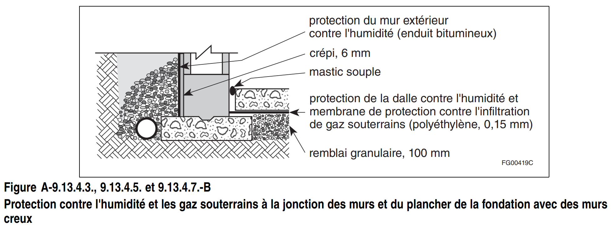
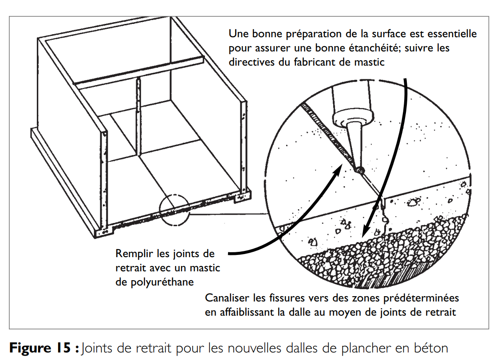
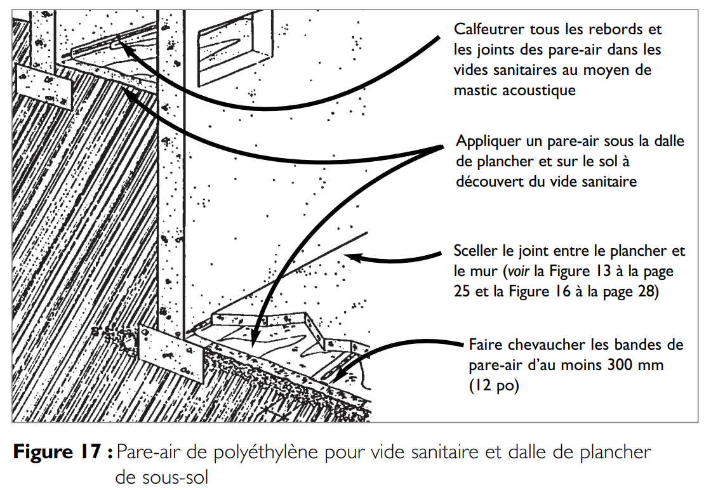

Protection des planchers ou des murs de fondation contre l’infiltration de gaz souterrains
Activer le mode plein écran
Le Radon est plus lourd que l’air, il s’accumule souvent dans les lieux les plus bas et les moins ventilés comme les sous-sols.
Le radon peut s’infiltrer par les fondations. Il peut parfois s’accumuler et gagner des concentrations entrainant un risque pour la santé. Comme c’est un gaz sans odeur, goût ou couleur, il est impossible de le détecter.
Protection contre les Gaz Souterrains
Extrait du Code de construction du Québec, Division B, Partie 9
9.13.4.1. Protection exigée contre les gaz souterrains
1) Sous réserve du paragraphe 2), tous les murs, toits et planchers en contact avec le sol doivent être conçus de façon à empêcher l’infiltration des gaz souterrains dans un bâtiment érigé à un endroit où il est reconnu que les émanations de gaz souterrains constituent un danger pour la salubrité et la sécurité des bâtiments (voir l’annexe A).
2) Une construction conçue pour empêcher l’infiltration de gaz souterrains dans le bâtiment n’est pas exigée dans les garages et les parties non fermées des bâtiments.
3) Si une protection contre les gaz souterrains est exigée, une membrane de protection contre l’infiltration de gaz souterrains doit être posée sur les murs et les toits en contact avec le sol, conformément aux articles 9.13.4.3. et 9.13.4.4.
4) Si une protection contre les gaz souterrains est exigée, les planchers en contact avec le sol doivent être protégés par :
a) une membrane de protection contre l’infiltration de gaz souterrains posée conformément aux articles 9.13.4.5. et 9.13.4.7.; ou
b) si le bâtiment ne contient qu’un seul logement, un système de dépressurisation sous le plancher, installé conformément à l’article 9.13.4.6.
A-9.13.4. Réduction des infiltrations de gaz souterrains.
Normalement, l’air extérieur qui pénètre dans un logement par des fuites de l’enveloppe au-dessus du niveau du sol améliore la qualité de l’air dans le logement en réduisant la concentration de polluants et la teneur en vapeur d’eau. Les infiltrations d’air ne sont indésirables que parce qu’elles ne sont pas contrôlées. En revanche, l’air qui s’infiltre par des fuites de l’enveloppe sous le niveau du sol peut accroître la teneur en vapeur d’eau de l’air intérieur et introduire des polluants provenant du sol. Le radon est l’un des polluants souvent contenus dans le sol.
Le radon est un gaz radioactif incolore et inodore produit par la décomposition naturelle du radium. Il est l’un des constituants, à différents degrés, des gaz souterrains dans toutes les régions du Canada et s’infiltre dans les sous-sols et les vides sanitaires des maisons. La présence de radon en quantités suffisantes peut accroître les risques de cancer du poumon.
Comme les risques d’infiltration de fortes concentrations de radon sont très difficiles à évaluer avant la construction, ce n’est souvent que lorsqu’un bâtiment est construit et occupé que le radon est décelé. C’est pourquoi diverses sections de la partie 9 exigent la mise en œuvre de certaines mesures pour réduire les infiltrations de radon dans les logements. Ces mesures sont :
- peu coûteuses;
- difficiles à mettre en œuvre après la construction; et
- recommandées à cause des autres avantages qu’elles procurent.
Il existe 2 principales méthodes :
- Isoler l’espace occupé du sol de la façon la plus étanche qui soit. Les sections 9.13. et 9.18. contiennent des exigences de protection contre l’infiltration de gaz souterrains dans les vides sanitaires. Il faut prévoir des joints de construction pour réduire la fissuration des murs de fondation, des couvercles étanches à l’air pour les puisards ainsi que d’autres mesures qui permettront de réduire les infiltrations. Les exigences de l’article 9.13.4.3., de l’article 9.13.4.5., et de l’article 9.13.4.7., sont décrites dans les notes A-9.13.4.3., 9.13.4.5. et 9.13.4.7. et A-9.13.4.5. 1) et 2).
- S’assurer que la différence de pression à l’interface sol-sous-sol est positive (vers l’extérieur) de façon à éviter les infiltrations de gaz (par les interstices difficiles à colmater). Les exigences de l’article 9.13.4.6., qui portent sur la dépressurisation sous la dalle, sont décrites à la note A-9.13.4.6.
Normes de Matériaux
9.13.4.2. Normes de matériaux
1) Les matériaux de protection contre l’infiltration de gaz souterrains utilisés pour les planchers sur sol doivent être conformes à la norme CAN/CGSB-51.34-M, « Pare-vapeur en feuille de polyéthylène pour bâtiments ».
Protection des murs de Maçonnerie
9.13.4.3. Protection des murs de maçonnerie contre l’infiltration de gaz souterrains
(Voir les notes A-9.13.4.3., 9.13.4.5. et 9.13.4.7.)
1) Les murs de maçonnerie qui doivent être protégés contre l’infiltration de gaz souterrains doivent comporter :
a) une rangée d’éléments de maçonnerie pleins ; ou
b) un solin traversant toute l’épaisseur du mur.
2) La rangée d’éléments de maçonnerie ou le solin exigés au paragraphe 1) doivent :
a) se trouver au niveau du plancher adjacent et être étanchéisés sur leur périmètre conformément à l’article 9.13.4.7.; ou
b) en l’absence de plancher, se trouver au niveau du revêtement du sol exigé à l’article 9.18.6.1. et être étanchéisés sur leur périmètre.
A-9.13.4.3., 9.13.4.5. et 9.13.4.7. Membranes de protection contre l’infiltration des gaz souterrains.
Les exigences de l’article 9.13.4.3., de l’article 9.13.4.5. et de l’article 9.13.4.7. sont illustrées dans les figures A-9.13.4.3., 9.13.4.5. et 9.13.4.7.-A et A-9.13.4.3., 9.13.4.5. et 9.13.4.7.-B.
L’exigence du paragraphe 9.13.4.7. 2), qui porte sur l’étanchéisation de tous les points de pénétration de la dalle, s’applique aussi aux poteaux métalliques creux et aux poteaux de maçonnerie. Ces poteaux doivent être étanches sur leur périmètre et leur partie centrale doit être fermée et étanchéisée.
L’exigence du paragraphe 9.13.4.7. 3) relative aux orifices d’évacuation d’eau des dalles peut être satisfaite par l’utilisation d’appareils brevetés qui sont commercialisés et qui permettent d’empêcher les infiltrations de gaz par les avaloirs de sol. Certains modèles comportent un siphon alimenté par un robinet qui se trouve à proximité. Chaque fois qu’on ouvre le robinet, le siphon se remplit, ce qui empêche les gaz d’égout de remonter et les gaz souterrains de s’infiltrer.
Protection contre l’humidité et les gaz souterrains à la jonction des murs et du plancher de la fondation avec des murs Pleins
/Attachments/f-A-9.13.4.3(1).png)
Protection contre l’humidité et les gaz souterrains à la jonction des murs et du plancher de la fondation avec des murs Creux

Protection des toits des constructions enterrées
9.13.4.4. Protection des toits des constructions enterrées contre l’infiltration de gaz souterrains
1) Le système d’imperméabilisation du toit d’une construction enterrée doit être raccordé à la membrane de protection contre l’infiltration de gaz souterrains des murs.
Membranes de protection
9.13.4.5. Membranes de protection contre l’infiltration de gaz souterrains sous les planchers
(Voir les notes A-9.13.4.3., 9.13.4.5. et 9.13.4.7. précédentes)
1) Si le plancher sur sol est une dalle de béton, la membrane de protection contre l’infiltration de gaz souterrains doit être :
a) posée sous la dalle ; ou
b) posée sur la dalle, si celle-ci doit être recouverte d’un plancher distinct.
(Voir la note A-9.13.4.5. 1) et 2).)
2) Si la membrane de protection contre l’infiltration de gaz souterrains est posée sous une dalle sur sol, les joints de cette membrane doivent se chevaucher d’au moins 300 mm (voir la note A-9.13.4.5. 1) et 2)).
3) Si la membrane de protection contre l’infiltration de gaz souterrains est posée sur une dalle sur sol, les joints de cette membrane doivent être étanchéisés.
4) Si elle est posée avec un plancher sur sol comportant une ossature, la membrane de protection contre l’infiltration de gaz souterrains doit être posée conformément aux articles 9.25.3.2. et 9.25.3.3.
A-9.13.4.5. 1) et 2) Protection contre l’infiltration de gaz souterrains par une feuille de polyéthylène placée sous la dalle.
Les planchers sur sol de tous les autres types d’usages que les garages doivent être construits de façon à réduire le risque d’infiltration de radon ou d’autres gaz dégagés par le sol. Dans la plupart des cas, la protection est réalisée en plaçant du polyéthylène d’au moins 0,15 mm d’épaisseur sous le plancher.
Dans bien des cas, la finition d’une dalle de béton posée directement sur du polyéthylène peut susciter des difficultés à un finisseur inexpérimenté. L’une des règles de la finition, que le béton soit placé ou non sur du polyéthylène, est de ne jamais finir ni « travailler » la surface d’une dalle lorsqu’elle « ressue » encore ou avant que toute l’eau de ressuage ait remonté et se soit évaporée. Si les opérations de finition sont exécutées trop tôt, avant que toute l’eau de ressuage se soit évaporée, des défauts de surface, comme les cloques, les craquelures, l’écaillage ou l’efflorescence, peuvent apparaître. C’est souvent le cas des dalles coulées directement sur du polyéthylène. La quantité d’eau de ressuage est plus importante et le temps qu’elle met à remonter à la surface est plus long que dans le cas d’une dalle coulée sur fond granulaire compacté. La présence du polyéthylène empêche l’eau excédentaire du fond de la dalle de sortir par le bas et d’être absorbée par le matériau granulaire.
Par conséquent, toute l’eau de ressuage, y compris celle du fond de la dalle, doit remonter jusqu’à la surface de la dalle. Il arrive très souvent, en pareilles circonstances, que la finition ait lieu trop tôt, provoquant ainsi des défauts de surface.
L’une des solutions souvent proposées consiste à prévoir une couche de sable entre le polyéthylène et le béton.
Malheureusement, cette solution est inacceptable parce qu’il est peu probable que le polyéthylène demeure intact après le coulage de la dalle. En effet, s’il est en contact étroit avec le béton, le polyéthylène, même endommagé, retarde encore efficacement l’infiltration de gaz qui ne pourront s’infiltrer dans le bâtiment qu’aux endroits où une déchirure du polyéthylène coïncidera avec une fissure dans le béton. Il est probable que la plupart des fissures du béton se produiront au-dessus du polyéthylène intact. En revanche, s’il y a une couche intermédiaire d’un matériau poreux, comme le sable, les gaz souterrains pourront circuler latéralement depuis une déchirure du polyéthylène jusqu’à la fissure du béton la plus proche et l’ensemble résistera donc beaucoup moins bien à l’infiltration de gaz souterrains.
Pour limiter la fissuration des dalles de béton, il faut bien comprendre la nature et les causes des changements de volume du béton ainsi que le retrait lors du séchage. La quantité globale d’eau dans un mélange est de loin le principal facteur déterminant l’importance du retrait et de la fissuration. Moins la quantité d’eau globale est élevée, moins le volume variera (en raison de l’évaporation de l’eau) et moins il se produira de retrait pendant le séchage. Pour réduire la variation de volume et la fissuration éventuelle due au retrait, il faut toujours utiliser un mélange contenant la plus faible quantité d’eau possible. Pour abaisser la teneur en eau des mélanges, on utilise souvent des superplastifiants pour donner au béton l’ouvrabilité nécessaire aux opérations de coulage. Les bétons à rapport eau/matériaux cimentaires élevé ont généralement une forte teneur en eau. Il faut les éviter si l’on veut réduire au minimum le retrait par séchage et la fissuration de la dalle. Le rapport eau/matériaux cimentaires pour les dalles sur sol ne devrait pas dépasser 0,55.
Dépressurisation sous le plancher
9.13.4.6. Dépressurisation sous le plancher
(Voir l’annexe A)
1) Sous réserve du paragraphe 3), un plancher sur sol doit reposer sur une couche de matériau granulaire, conformément au paragraphe 9.16.2.1. 1).
2) Un tuyau d’au moins 100 mm de diamètre doit traverser verticalement le plancher, au centre ou près du centre du plancher, de sorte que :
a) l’ouverture inférieure du tuyau soit enfoncée dans la couche de matériau granulaire décrite au paragraphe 1) ; et
b) le haut du tuyau permette le raccordement à l’équipement de dépressurisation.
3) La couche de matériau granulaire décrite au paragraphe 1) doit avoir, près du centre du plancher, au moins 150 mm d’épaisseur sur un rayon d’au moins 300 mm autour du tuyau décrit au paragraphe 2).
4) L’extrémité supérieure du tuyau décrit au paragraphe 2) doit être muni d’un couvercle amovible.
5) Le tuyau décrit au paragraphe 2) doit être étiqueté de manière à indiquer clairement qu’il sert uniquement à recueillir les gaz souterrains présents sous les planchers sur sol.
6) Sous réserve du paragraphe 8), lorsque la construction d’un bâtiment conformément aux paragraphes 1) à 5) est terminée, il faut procéder à un essai selon la norme EPA-402-R-93-003, « Protocols for Radon and Radon Decay Product Measurements in Homes », afin de déterminer la concentration de radon dans le bâtiment.
7) Le propriétaire doit faire parvenir copie des résultats de l’essai exigé au paragraphe 6) à l’autorité compétente.
8) L’essai exigé au paragraphe 6) doit inclure la mesure des concentrations de radon dans le sous-sol.
9) Si la concentration de radon déterminée de la manière indiquée aux paragraphes 6) et 8) dépasse la teneur tolérée au Canada pour l’air intérieur des habitations, comme l’indique le document SC-H46-2/90-156F, « Directives d’exposition concernant la qualité de l’air des résidences », il faut installer un système de dépressurisation du sol sous le plancher afin de ramener la concentration de radon en deçà de la teneur tolérée au Canada.
10) Si un système de dépressurisation du sol est installé sous le plancher, il faut :
a) assurer un apport supplémentaire d’air de compensation, conformément à l’article 9.32.3.8.; et
b) prendre des mesures pour s’assurer que toute baisse de température du sol n’aura pas d’effets néfastes sur les fondations.
A-9.13.4.6. Protection contre l’infiltration de gaz souterrains par dépressurisation. Comme l’indique la note A-9.13.4., l’une des façons d’empêcher que les gaz souterrains n’atteignent les pièces du sous-sol consiste à produire à l’interface sol-bâtiment une surpression du côté intérieur pour empêcher les infiltrations de gaz par les interstices. Pour ce faire, on doit tenir compte de la pression du côté intérieur de l’enveloppe et de la pression dans le sol, chacune influencée par des facteurs très différents.
Il y a une plage des pressions intérieures admissibles pour les maisons. La limite supérieure est essentiellement imposée par la nécessité de minimiser les fuites d’air intérieur humide et chaud par l’enveloppe. La limite inférieure dépend du type de chauffage à combustion et de la pression à l’intérieur du sol pour éviter que les gaz ne s’infiltrent, comme le mentionnent les notes A-9.13.4. et A-9.33.1.1. 2).
La pressurisation de la maison ou du sous-sol pour empêcher les infiltrations de gaz pourrait créer des problèmes de condensation à cause des fuites d’air par l’enveloppe du bâtiment. La réduction de la pression à l’extérieur de l’enveloppe est donc la méthode la plus pratique pour atteindre la différence de pression désirée.
Il a été démontré qu’un système de dépressurisation sous le plancher est très efficace pour prévenir l’infiltration de gaz souterrains dans les maisons. On recommande d’utiliser cette technique dans les régions où les dégagements de radon sont supérieurs à la normale ou si d’autres gaz polluants se dégagent du sol.
À l’article 9.13.4.6., on présente la dépressurisation comme une solution de remplacement à la feuille de polyéthylène posée sous la dalle de plancher. Cette méthode consiste à faire passer dans le plancher un tuyau de ventilation qui ne sera relié au système de dépressurisation sous le plancher que si la concentration de radon dépasse les seuils recommandés.
Il faut d’abord procéder à un essai pour déceler les infiltrations de radon dans la maison, puis le propriétaire doit faire parvenir copie des résultats à l’autorité compétente. Comme la concentration de radon dans une maison peut varier considérablement au cours d’une même année, l’essai doit être effectué pendant une période suffisamment longue pour que la concentration puisse être déterminée avec une certaine précision.
On suggère d’adopter une période d’essai minimale de trois mois ou de suivre les indications de l’autorité compétente. L’emplacement idéal pour l’essai est le centre du sous-sol, ou du plancher du premier étage si la maison est dépourvue de sous-sol.
Le seuil de nocivité fixé par Santé Canada pour le radon est de 800 Bq/m3 (voir H46-2/90-156F, « Directives d’exposition concernant la qualité de l’air des résidences »). Si les résultats de l’essai indiquent que la concentration en radon dépasse le seuil de nocivité prescrit, il faut installer les autres composants du système de dépressurisation sous le plancher. Il est probable que les seuils de nocivité fixés par les autorités canadiennes et américaines soient différents.
Pour installer ce système, il faut enlever le couvercle du tuyau et raccorder celui-ci à une installation de ventilation d’extraction. Les tuyaux d’extraction qui traversent des espaces non chauffés doivent être isolés. Le ventilateur doit être placé à l’extérieur des pièces habitées, à un endroit où le bruit ne gênera pas. De plus, il est préférable que le ventilateur se trouve aussi près que possible de la sortie de ventilation, pour que la partie en aval du ventilateur ne traverse pas des pièces qui, en cas de fuite, pourraient être contaminées par de fortes concentrations de radon, aggravant ainsi le problème au lieu de le régler. Le ventilateur doit convenir à l’application et pouvoir fonctionner en permanence.
Comme la concentration en radon des gaz d’échappement peut être très élevée, les gaz souterrains captés par le système de dépressurisation sous le plancher doivent être évacués par le toit. Par conséquent, il peut être souhaitable de prendre certaines mesures pour faciliter l’installation ultérieure du système. Ainsi, on pourrait placer le tuyau de ventilation de la dalle sous une cloison intérieure à travers laquelle passerait un tuyau de montée et pratiquer des ouvertures dans la sablière et la lisse de la cloison, en particulier si celles-ci ne sont pas accessibles depuis un sous-sol ou un comble.
Une fois le système de dépressurisation en place, il faut faire une nouvelle analyse de la concentration de radon.
Étanchéisation du périmètre et des pénétrations
9.13.4.7. Étanchéisation du périmètre et des pénétrations
(Voir les notes A-9.13.4.3., 9.13.4.5. et 9.13.4.7. précédentes)
1) Le joint entre le plancher sur sol et la face intérieure des murs adjacents doit être étanchéisé au moyen de mastic souple.
2) Les pénétrations dans un plancher sur sol pour laisser passer des tuyaux ou d’autres objets doivent être rendues étanches aux gaz qui se dégagent du sol.
3) Les pénétrations pour l’évacuation de l’eau d’un plancher sur sol doivent être conçues de façon à empêcher les remontées de gaz souterrains tout en permettant l’écoulement de l’eau.
Les méthodes pour réduire les voies d’infiltration du radon
Quelques mesures à appliquer
Afin de réduire les fissures de la dalle de plancher du sous-sol il vous faut préparer la zone sous la dalle en remplaçant le sol instable, et en enlevant les grosses pierres.
Ensuite vous devez utiliser un béton très résistant. Pour les planchers de sous-sol, il est recommandé d’utiliser un béton offrant une résistance à la compression sur 28 jours d’au moins 20 MPa (3 000 psi).
Pour le béton, ajoutez un plastifiant ou ajoutez de l’eau au béton sur place pour faciliter le coulage. Durant le durcissement tendez un peu d’eau sur le béton frais ou recouvrez la dalle d’un composé spécial afin d’augmenter la résistance et la durabilité du béton.
Puis, créez des joints de retrait et sceller la jonction du plancher et des murs du sous-sol.
Vous devez boucher les ouvertures autour de tous les objets qui traversent les murs de fondation et le plancher du sous-sol et sceller ou boucher l’intérieur des objets creux qui pénètrent les murs ou les planchers.
Procédez à l’installation d’une membrane d’au moins 0,15 mm (0,006 po) en polyéthylène sous la dalle du plancher du sous-sol ou sur le sol à nu des vides sanitaires. Les joints de la membrane doivent se chevaucher sur au moins 300 mm (12 po). Dans les vides sanitaires, vous devez sceller les joints et les rebords avec un mastic acoustique.
Pour l’avaloir de sol, équipez le d’un siphon-obturateur qui laisse passer l’eau et fait obstacle à l’infiltration de radon dans le sous-sol.
Concernant le puisard, il doit être muni d’un couvercle étanche.
Enfin vous devriez installer des blocs de maçonnerie pleins au sommet et à la base des murs de fondation.
Constructions Neuves
Pour prévenir une grande concentration de radon, le MSSS (Ministère de la Santé et des Services sociaux) du Québec vous conseil comme indiqué ci-dessus, d’installer un système de ventilation approprié, d’utiliser un béton plus résistant, d’y ajouter un plastifiant et de placer une membrane de polyéthylène sous le béton.
Un évent pouvant capter les gaz sous la dalle du sous-sol et les aspirer à l’extérieur de la maison est également recommandé dans les régions à Risques.
Points d’entrée habituels du radon dans les murs de fondation et les planchers en béton coulé
/Attachments/radon_2.png)
Autres points d’entrées potentielles lorsque les murs de fondation sont en blocs de béton
/Attachments/radon_3.png)
Scellement des puisards ouverts
/Attachments/radon_8.png)
Il est possible de sceller le puisard en y installant un couvercle étanche à l’air. Si le puisard sert également d’avaloir de sol, il faudra juste ajouter un siphon spécial au couvercle étanche et enfoncer légèrement celui-ci dans la cavité du puisard.
Siphon pour avaloir de sol existant
/Attachments/radon_9.png)
Attention ! Les siphons-obturateurs ne peuvent pas faire office de clapets de retenue pour le système d’égout.
Sol à Nu
Si la dalle de plancher du sous-sol n’est pas continue vous devez recouvrir le sol à nu de béton coulé.
Obturation des Cavités au sommet des Murs en Blocs de Béton
/Attachments/radon_10.png)
À défaut d’une rangée de blocs pleins, il faut obturer les cavités au sommet des fondations et celles des murs porteurs internes.
Dépressurisation du Sol entourant les Fondations
/Attachments/radon_11.png)
Pour dépressuriser le sol entourant les fondations vous devez :
- Installer un tuyau d’évacuation qui traverse la dalle de plancher ou le relier au tuyau de drainage périmétrique en passant par le puisard.
- Ajouter au tuyau d’évacuation un ventilateur fonctionnant en permanence.
- Recouvrir le sol d’une membrane de polyéthylène scellée aux murs ou de toute autre membrane semblable et expulser vers l’extérieur les gaz souterrains logés sous cette membrane.
Pour une maison munie de fondations en blocs de béton, vous devrez peut être placer une succion dans les cavités des blocs.
Obturation des fissures dans les murs de fondation et les planchers
/Attachments/radon_12.png)
Obturation des joints des murs de fondation et des planchers du sous-sol
/Attachments/radon_13.png)
Joints de retrait pour les nouvelles dalles de plancher en béton
Obturer la jonction entre le mur de fondation et le plancher du sous-sol dans les constructions neuves

Pare-air de polyéthylène pour vide sanitaire et dalle de plancher de sous-sol

Exigences applicables
Pour empêcher le radon de s’infiltrer dans l’aire habitable du sous-sol, on doit disposer une membrane pare-air reliant la dalle de fondation aux murs.
Il faut également poser un tuyau capuchonné sous la dalle du plancher afin de pouvoir ventiler cet espace plus tard si la concentration de radon devenait problématique.
Il n’est pas nécessaire de protéger les vides sanitaires non chauffés contre une infiltration de radon puisqu’il est possible d’en prévenir l’accumulation grâce aux mesures de ventilation déjà exigées.
Il n’est pas non plus exigé de mettre en place les moyens nécessaires pour permettre la protection ultérieure, contre le radon, d’un vide sanitaire chauffé dépourvu de dalle de béton qui demeure accessible. En cas d’infiltration, on pourra facilement prendre des mesures pour extraire le radon de l’espace sous-jacent au pare-air.
Le radon est un gaz radioactif nocif pour la santé. Il est incolore, inodore et sans goût. Il est la deuxième cause du cancer du poumon. Ce gaz est plus lourd que l’air et s’accumule dans les sous-sols.
Voici les recommandations de Santé Canada pour réduire les infiltrations de radon dans les sous-sols :
- Installer une membrane ou un produit étanche sous la dalle
- Sceller le joint entre le mur de fondation et la dalle
- Sceller tous les percements du mur de fondation et de la dalle
- Sceller toutes les colonnes et les murs porteurs avec la dalle et la membrane
- Installer des drains de plancher à l’épreuve de l’infiltration de gaz
- Installer un couvercle étanche sur les puisards
/Attachments/front_page_source.png)
Installer un tuyau dans le gravier pour la dépressurisation sous la dalle
Cette installation est obligatoire dans le code de construction du Canada 2010. Un tuyau perforé de 4” de diamètre doit être installé dans le gravier ¾” net et rejoindre le centre de la surface de la dalle. Ce tuyau est une installation préventive et sera raccordé à un ventilateur d’extraction si, après les travaux complétés, un test démontre un taux de concentration en radon supérieur à 200 becquerels.
/Attachments/zradon_6.png)
Installer un produit étanche à l’air et au gaz radon sur le gravier sous la dalle
Le sous-sol est souvent une zone à risques : humidité élevée, inondations, moisissures, etc. Avec les nouvelles exigences énergétiques de la partie 11 du Code de Construction du Québec (CCQ), il est maintenant obligatoire d’isoler sous la dalle de béton du sous-sol. L’isolation doit avoir une valeur minimum de R-5 pleine surface ou R-7,5 sur 4 pieds (1,2 mètre) au périmètre. De plus, une protection contre les gaz souterrains (sous-section 9.13.4 du CCQ), principalement le radon, doit être installée afin de se conformer à ces exigences.
Sceller le joint entre le mur de fondation et la dalle
Sceller tous les percements de la dalle, du mur de fondation et tous les poteaux et les murs porteurs, ainsi que la descente d’escalier
Installer des avaloirs à plancher à l’épreuve de l’infiltration de gaz
Le gaz radon peut utiliser l’eau comme véhicule d’infiltration. Il est donc important d’utiliser des avaloirs à plancher spécifiquement conçus pour empêcher l’infiltration de gaz.
Installer un couvercle étanche sur les puisards
Les puisards peuvent communiquer directement avec le gravier, il est donc important d’utiliser des couvercles hermétiques spécialement conçus à cet effet.
Le gouvernement canadien a modifié le seuil de sécurité pour les gaz radon dans les bâtiments. Les nouvelles exigences du Code National du Bâtiment du Canada, 2010 (sous-section 9.13.4) obligent l’installation d’un système d’étanchéité à l’air dans les sous-sols pour bloquer les infiltrations des gaz radon.